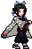
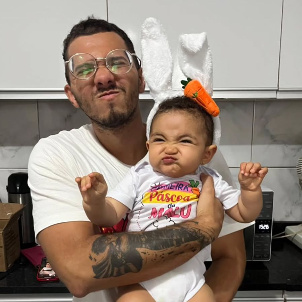
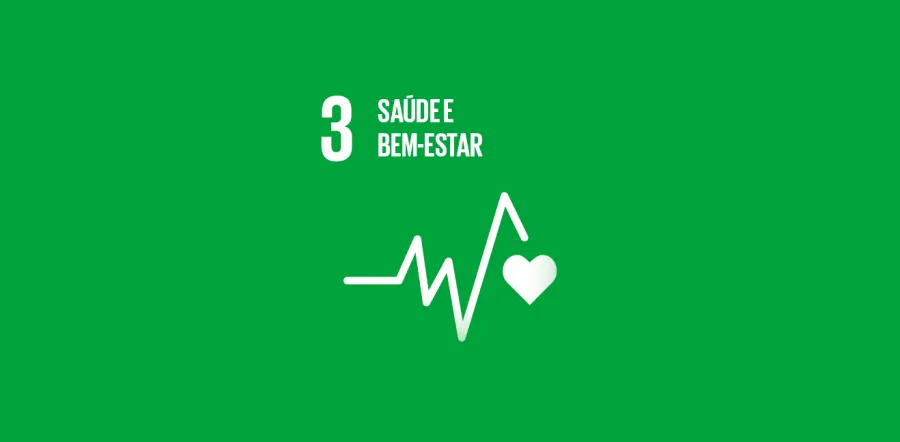

Eu e meu Docinho ❤
Olá! Meu nome é Alexandre Donisete, tenho 25 anos e sou uma pessoa que não possui muitas paixões, mas que é muito apegada às que tem. Sem dúvidas, as maiores delas são minha sobrinha Malu e Jesus Cristo, que sempre me alegram e fortalecem meu ânimo nos momentos difíceis. Tenho um grande interesse por Psicologia e por tudo o que envolve o comportamento humano. No meu tempo livre, gosto de jogar cardgames, assistir animes ou séries, correr e, recentemente, comecei a desenvolver o hábito da leitura — algo que tem sido desafiador, mas que, aos poucos, estou aprendendo a apreciar.
Terapia Cognitivo-Comportamental

Além das minhas paixões pessoais, sempre tive um grande interesse por Psicologia, especialmente pela abordagem da Terapia Cognitivo-Comportamental (TCC). Esse interesse nasceu da vontade de compreender melhor como os pensamentos influenciam nossas emoções e comportamentos, e como pequenas mudanças na forma de enxergar o mundo podem transformar nossa vida prática. A TCC me chamou atenção justamente por ser uma abordagem objetiva, estruturada e focada em resultados reais, algo que combina muito com a forma como eu gosto de aprender e evoluir. A TCC trabalha com a ideia de que nossos pensamentos, sentimentos e ações estão conectados. Quando entendemos esses padrões, podemos mudar comportamentos, reduzir sofrimento emocional e desenvolver habilidades mais saudáveis para lidar com desafios do dia a dia. Esse tipo de visão sempre me motivou a estudar mais sobre o assunto e aplicar conceitos de autoconhecimento na minha própria rotina.
Maki Zen'in e Shinobu Kochou

Sempre gostei de animes porque eles vão além do entretenimento e trazem histórias profundas, emocionais e cheias de superação. Esse universo me acompanha desde criança e sempre me inspirou a refletir sobre força, resiliência e evolução pessoal. Entre tantos personagens marcantes, dois sempre se destacaram para mim: Maki Zenin e Shinobu Kochou. A Maki me inspira pela determinação, pela forma como enfrenta limites impostos pelos outros e pela força que ela constrói por conta própria. Já a Shinobu me cativa pela inteligência emocional, pela calma diante das dificuldades e pela maneira criativa como transforma fragilidade em estratégia. Me identifico com as duas porque elas representam lados diferentes da força — a força externa e a força interna — e ambas refletem qualidades que admiro e busco desenvolver na minha própria trajetória.
ODS 3 - Saúde e Bem Estar
Os animes têm um papel importante na forma como muitas pessoas entendem emoções, enfrentam desafios e desenvolvem resiliência. Suas narrativas frequentemente retratam personagens lidando com medo, perda, superação e autodescoberta. Esses elementos dialogam profundamente com conceitos estudados na Psicologia, como autorregulação emocional, desenvolvimento de habilidades sociais e fortalecimento do senso de identidade. Essa conexão torna os animes uma ferramenta acessível para apoiar assuntos sobre saúde mental, aproximando jovens de reflexões que, muitas vezes, são difíceis de abordar diretamente. Isso se relaciona com o Objetivo de Desenvolvimento Sustentável 3 (ODS 3), que promove saúde e bem-estar para todos. Ao usar esse universo cultural tão popular, torna-se mais fácil incentivar hábitos de autocuidado, estimular o autoconhecimento e reduzir estigmas relacionados à busca por apoio psicológico. Assim, os animes não são apenas entretenimento: eles ajudam a criar um espaço de acolhimento, reflexão e desenvolvimento emocional que contribui para a promoção do bem-estar mental no dia a dia.
Que personagem você seria?

No universo dos animes existem personagens para todos os perfis: desde os mais tímidos e introspectivos até os mais extrovertidos e explosivos. Cada um deles carrega características únicas, histórias marcantes e formas próprias de enfrentar desafios, e justamente por isso é tão fácil se identificar com algum deles. Neste site, você pode realizar seu cadastro e login para acessar um teste de personalidade especialmente desenvolvido para relacionar você a um desses personagens. O objetivo não é diagnosticar nada nem rotular ninguém, mas sim oferecer uma experiência divertida, leve e lúdica, permitindo que você descubra quais personagens mais combinam com sua forma de pensar, sentir e agir. A ideia é transformar o ato de se conhecer em algo natural e prazeroso, aproximando entretenimento e reflexão pessoal através do mundo dos animes.